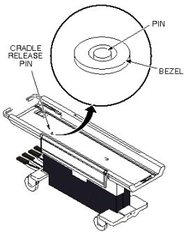

Operating Documentation
Direction 5133315-3, Rev# 14
Signa EXCITE HD 1.5T Service Methods
Module Version 1.0, Version Date 5/3/07
Operating Documentation |
| Required Persons | Preliminary Reqs | Procedure | Finalization |
|---|---|---|---|
| 1 | Not Applicable | Not Applicable | Not Applicable |
Remove Cradle Assembly from Patient Transport per procedure in Removing Cradle Assembly.
Remove all outer and inner trim covers from sides of Patient Transport.
Tighten or loosen the cable adjustment screw so that the cradle release pin is flush to 1/16 inch (1.59 mm) below the level of the table top. See Illustration 1 and Illustration 2.
Illustration 1: CRADLE RELEASE PIN HEIGHT ADJUSTMENT

Illustration 2: CRADLE RELEASE PIN HEIGHT

No finalization steps.